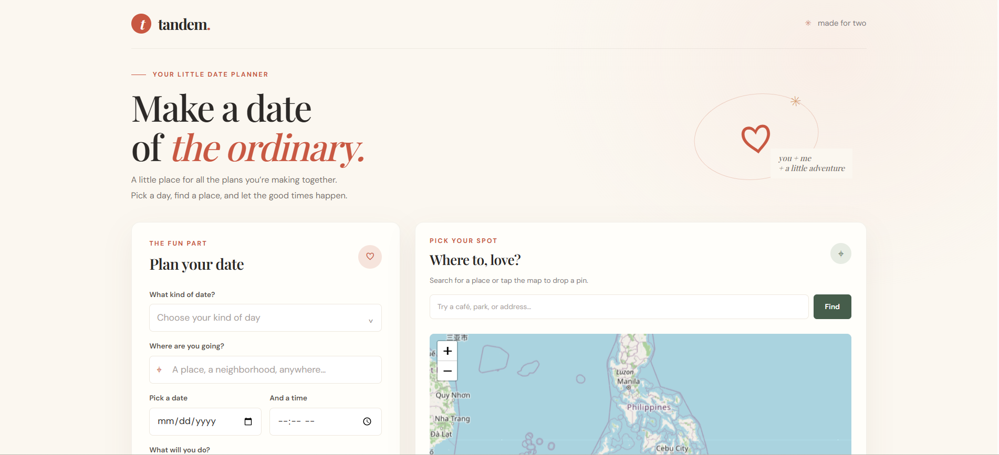
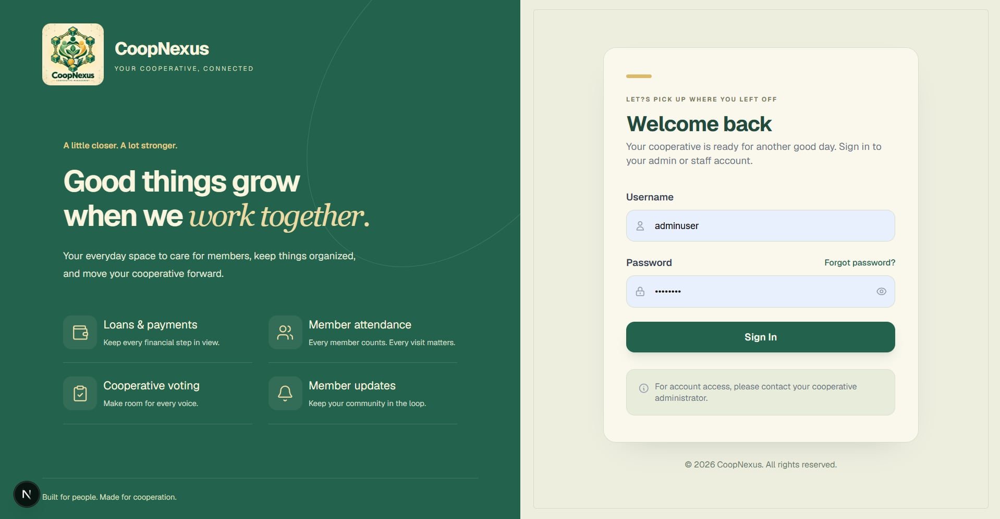

Bachelor of Science in Information Technology
Davao Del Norte State College · Panabo City, Davao Del Norte
GRADUATEDInternships
Hi, I'm Jenny Mae Perez Perono — I am an Information Technology student eager to explore new technologies, learn new skills, and discover more about the world of software development. I am always open to new experiences and opportunities that will help me grow, improve, and turn my ideas into meaningful projects.
01 — Information
I'm an Information Technology student with a growing passion for technologies, thoughtful design, and solving everyday problems with.
I enjoy learning by doing: sketching an idea, writing the code, and refining it until it feels right. I'm looking for opportunities to grow with a supportive team, contribute to real projects, and make digital experiences a little more human.
02 — Education
Davao Del Norte State College · Panabo City, Davao Del Norte
GRADUATEDA.O Floirendo National High School · Panabo City, Davao Del Norte
With Honors
GRADUATEDA.O Floirendo National High School · Panabo City, Davao Del Norte
With Honors
GRADUATEDRizal Elementary School · Panabo City, Davao Del Norte
With Honors
GRADUATED03 — Skills
04 — Projects

Web app · 2026
A couple’s date-planning system that helps partners discover locations, plan memorable dates, and capture special moments through an integrated map feature.

Capstone Project
a secure, blockchain-based system that simplifies cooperative management by handling membership, loans, payments, attendance, and elections in one platform.
Midterm Project
Blood Donation System Saving Lives, One Donation at a time
05 — Achievements
Advance Seminar
Series Training: Artificial Intelligence · Certification
National Certificate 2
Computer System Servicing · TESDA
CCNA: Switching, Routing and Wireless Essentials
NetAcad · Certification
06 — Experience
Gredu · Panabo City
Taking care of an elderly person while managing household chores can be challenging, requiring patience, responsibility, and good time management.
Sharon Homes · Panabo City
Managed household duties and provided assistance to residents in a residential care setting.
Carenderia · Quezon Street,Panabo City
Assisted customers with ordering and served food in a fast-paced restaurant environment.
TADECO Company District 3/Zone 6 · Panabo City
Assisted with administrative tasks and maintained office operations.
TADECO Livelihood Training Center · Panabo City
Assisted with production tasks and contributed to the development of novelty items.
Let's connect
Open to internship opportunities, collaborative projects, and good conversations about technology.
Say hello